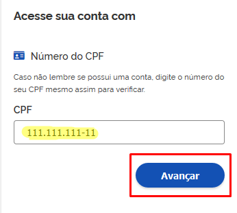
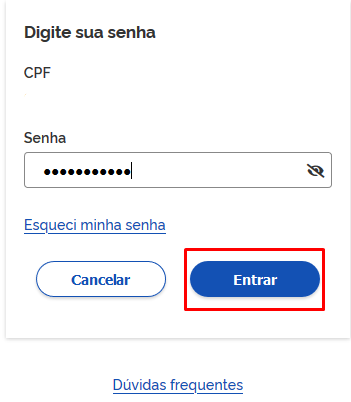
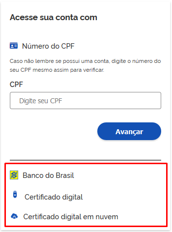
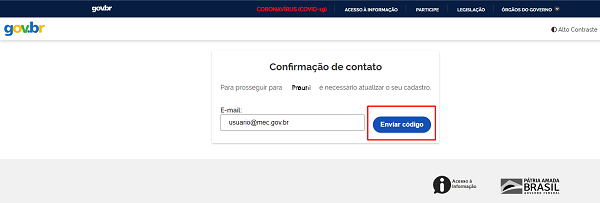
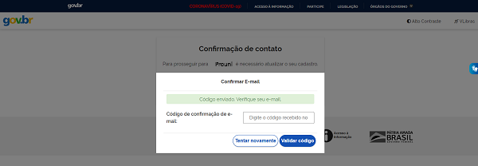
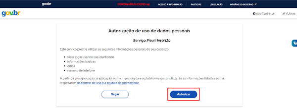
 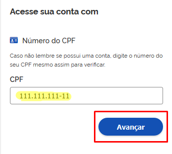
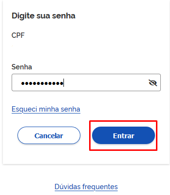
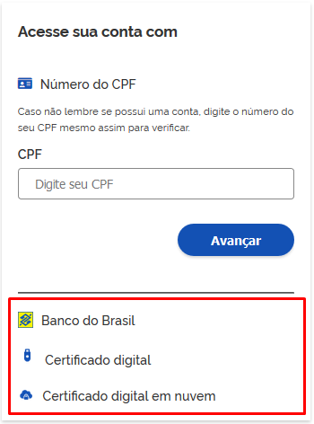
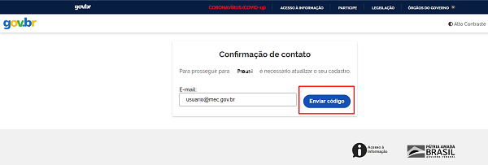
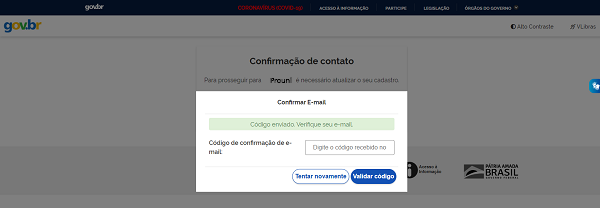
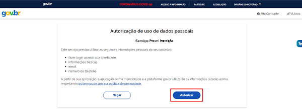
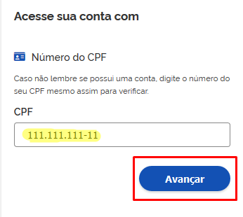
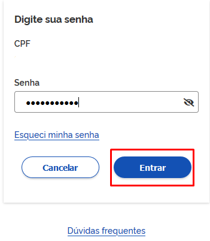
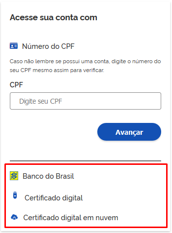
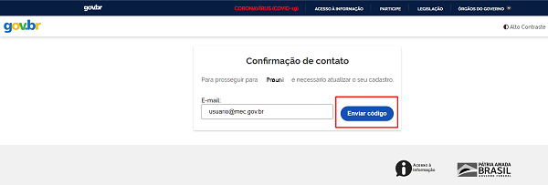
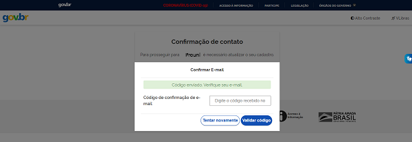
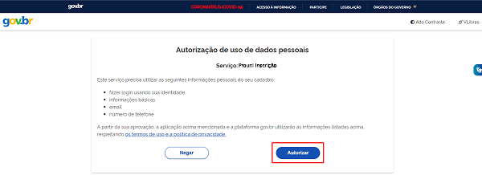
Para acessar o Prouni, utilize sua conta gov.br.
Uma conta gov.br garante a identificação de cada cidadão que acessa os serviços digitais do governo federal.
Caso ainda não esteja cadastrado, crie sua conta gov.br.
A forma de acesso ao Prouni agora é por meio de sua conta gov.br Clique aqui para saber como acessar.
Hoje é dia 23/07/2024 04h47min00
Todos os horários referem-se ao horário oficial de Brasília.
212 3.5.0-91
Todos os horários referem-se ao horário oficial de Brasília.
212 3.5.0-91